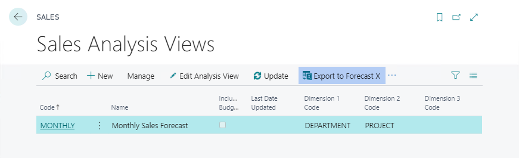
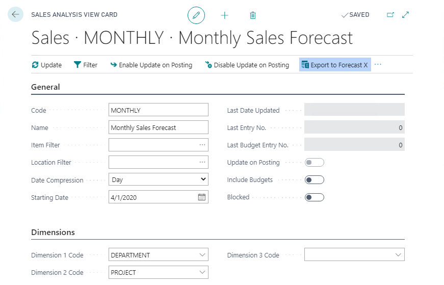
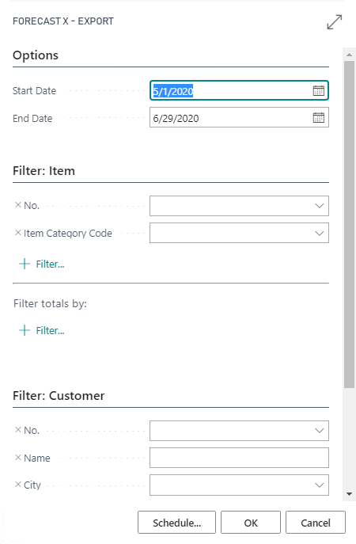

Home
/
Learn
/
Forecast X
Exporting to Forecast X
3 minutes - Unit 1 of 1
Forecast X is a forecasting tool built within Excel that is built for growth and gives you unparalleled statistical power along with the infinite flexibility of Excel, while remaining incredibly easy to use.
Exporting an exising Sales Analysis view to the Forecast X format is a simple process that can be accessed from either the Sales Analysis Views list

or from the Sales Analysis View Card

The request options page of the export action allows you to further filter the data required. Clicking the OK button will generate and Excel spreadsheet ready to be used with Forecast X

Module completed
< Back
Back to Modules >
×